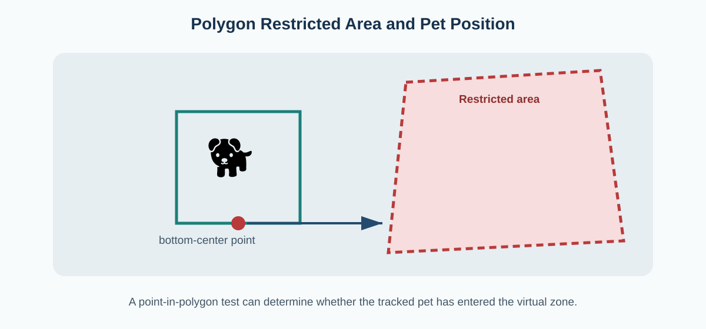
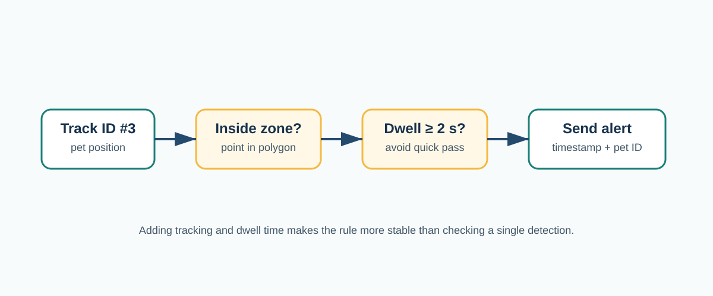

Restricted-Area Detection
A restricted area is not something YOLO learns automatically. It is a spatial rule defined by the application. The most flexible design is to let the user draw a polygon over the camera image and then test whether the tracked pet is inside it.
1. Define the area
Region-of-interest intrusion detection has been studied in surveillance systems. Chatterjee, Singh, and Agarwal describe a YOLOv8-based physical intrusion system built around a region of interest.[1] For a pet application, the object class changes from a person or general intruder to a pet, but the spatial concept is similar.
A simple polygon can be stored as a list of image coordinates:
restricted_zone = [
(690, 140),
(1020, 120),
(1060, 410),
(660, 430)
]The coordinates are tied to the camera view. If the camera moves, the polygon may no longer match the real physical area, so the zone should be recalibrated.

2. Choose a representative point for the pet
The center of a bounding box is easy to compute, but for a zone drawn on the floor, the bottom-center can be more meaningful because it is closer to where the animal touches the ground.
pet_x = (x1 + x2) / 2
pet_y = y2
pet_point = (pet_x, pet_y)This is still an approximation. A bounding box is a 2D rectangle around a 3D animal, so perspective and posture can affect the point. A more advanced system could use segmentation or pose estimation to estimate the paws or body contact area.
3. Test whether the point is inside the polygon
A point-in-polygon test returns whether the pet point is inside, outside, or on the edge of the zone. In an OpenCV implementation, this can be done with cv2.pointPolygonTest().
inside = cv2.pointPolygonTest(
restricted_zone_contour,
pet_point,
False
)
if inside >= 0:
print("Pet is inside the restricted area")4. Add tracking and dwell time
This is where tracking becomes more important than a one-frame detector. The application can create a timer for each track ID. If pet ID #3 enters the zone, the timer starts. If the pet leaves, the timer resets or the event is closed.
if inside_zone[pet_id]:
if pet_id not in entry_time:
entry_time[pet_id] = current_time
dwell_time = current_time - entry_time[pet_id]
if dwell_time >= 2.0:
send_alert(pet_id, dwell_time)
else:
entry_time.pop(pet_id, None)A dwell threshold can reduce alerts caused by a pet briefly crossing the zone boundary. The exact threshold should depend on the application. For example, a dangerous area might require an immediate warning, while a sofa-monitoring application might wait a few seconds.

5. What should an alert contain?
Minimum event data
Pet track ID, time of entry, time in the zone, camera name, and optionally a saved frame.
Useful anti-spam rules
Dwell threshold, cooldown period after an alert, and one alert per continuous entry instead of one alert per frame.
Restricted-area algorithm
The full algorithm can be summarized as:
INPUT: video, polygon zone Z, dwell threshold T
for each video frame:
detect pets
update tracker
for each tracked pet i:
p = bottom-center of bounding box
if p is inside Z:
if i has no entry time:
store current time as entry time
if current time - entry time[i] >= T:
create alert
else:
clear entry time for iWhy this goes beyond YOLO
The detector only answers whether a pet is visible and where its box is. The restricted-area system adds three separate ideas: persistent identity from tracking, geometry from point-in-polygon testing, and time from dwell measurement. That is why a complete restricted-area monitor cannot be described as “YOLO detects the restricted area.” The area is defined by the user or application, and the system reasons about the tracked pet's position relative to it.